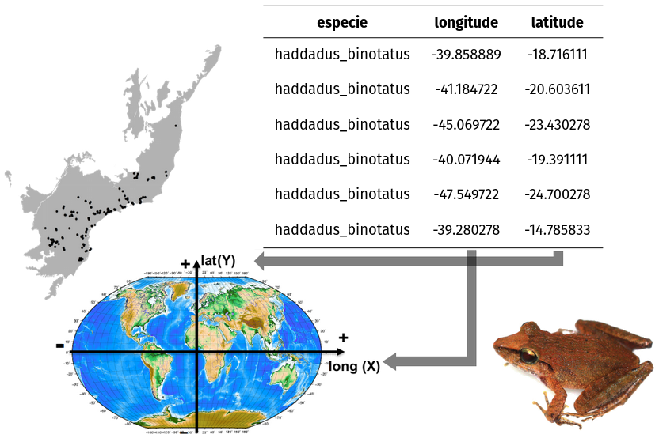
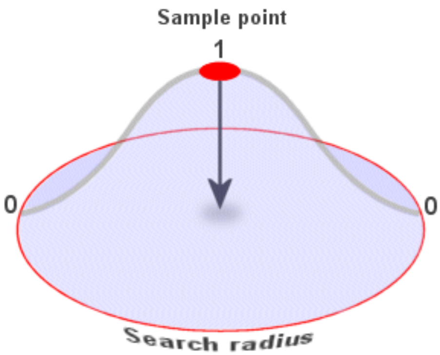
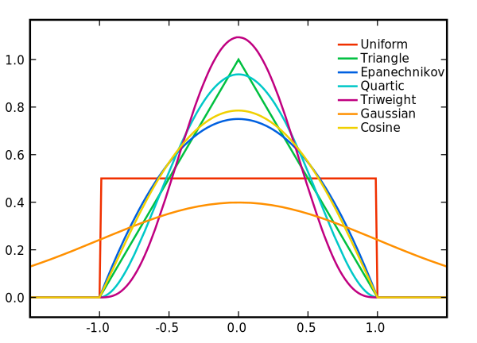
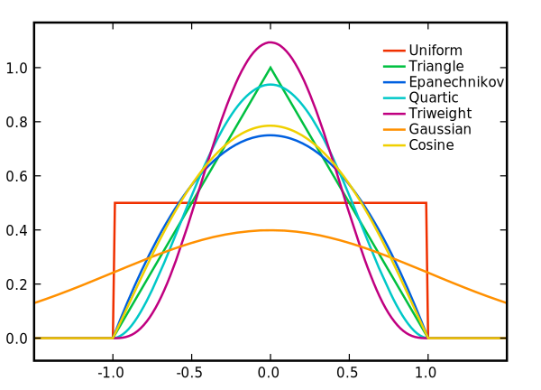
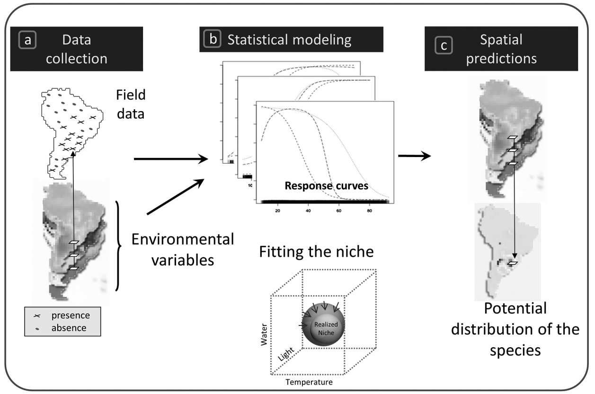
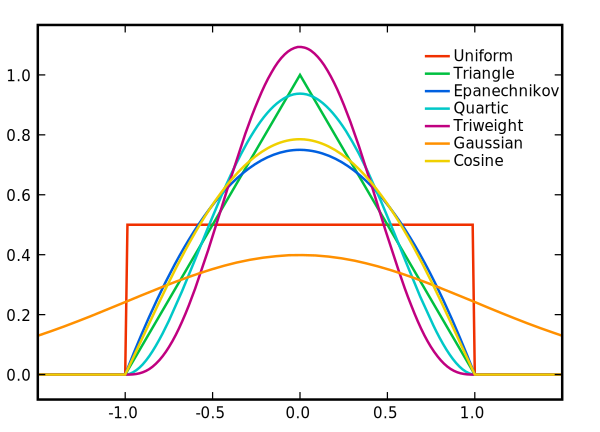
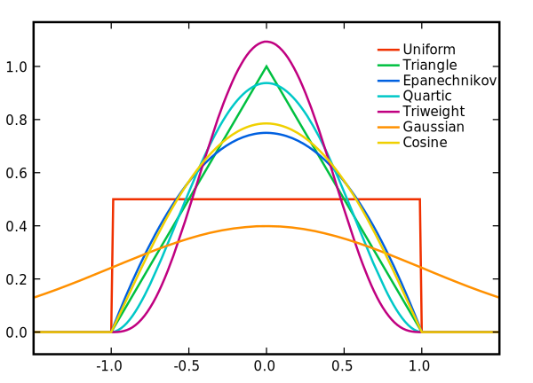

Analyzing spatial patterns in biodiversity data
São Paulo School of Advanced Science (SPSAS)
Co-designing Biodiversity Assessments
October 31, 2024
Maurício Vancine
- Ecologist and PhD in Ecology
- Post-Doc in Spatial Ecology (Prof. Mathias - Unicamp)
- Spatial Ecology
- Ecological Modeling
- Ecological and Spatial Data Analysis
- Amphibian Ecology and Conservation
- Open source (R, QGIS, GNU/Linux)
Content
- Biodiversity concepts
- Species occurrences
- Spatial analysis
- Application: Seleção Natural Platform
- Install R and RStudio
- Install packages
- Computer testing
- Basic R explanation (maybe)
- Basic R explanation
- Species occurrences
- Spatial analysis
Objectives
- Contribution of spatial data and analysis to biodiversity knowledge
- Basic tools for downloading and cleaning species occurrence data
- Basic tools for spatial analysis:
- Spatial units (grids, hexagons, convex hull)
- Point density (kernel maps)
- Species Distribution Modeling (very basic)
IMPORTANT!!!
We are in a safe and friendly space
Feel free to interrupt me and ask questions

IMPORTANT!!!
My English is a work in progress…
Biodiversity concepts
What is biodiversity?
Sustainable Ecology and Economic Development (SEED)
Biodiversity concepts
How to measure biodiversity?
Biodiversity concepts
How to measure biodiversity?
Biodiversity concepts
How to measure biodiversity?
Why do we want so much to measure biodiversity?
Biodiversity concepts
Carbon credit
- Allows private companies to trade carbon emissions
- Measured in tonnes of carbon dioxide equivalent (tCO2e)
Biodiversity concepts
Biodiversity credit
- Allows private companies to finance activities (e.g. forest conservation or restoration) for positive biodiversity gains

Biodiversity concepts
Carbon credit vs Biodiversity credit

There is a small problem: we do not know all the biodiversity……
Biodiversity concepts
Seven biodiversity shortfalls
- Species taxonomy (Linnean)
- Species distribution (Wallacean)
- Species abundance (Prestonian)
- Species evolutionary patterns (Darwinian)
- Species abiotic tolerances (Hutchinsonian)
- Species traits (Raunkiæran)
- Species biotic interactions (Eltonian)
Biodiversity concepts
Let’s select a biodiversity shortfall to explore
- Species taxonomy (Linnean)
- Species distribution (Wallacean)
- Species abundance (Prestonian)
- Species evolutionary patterns (Darwinian)
- Species abiotic tolerances (Hutchinsonian)
- Species traits (Raunkiæran)
- Species biotic interactions (Eltonian)
Species occurrences
Format

Species occurrences
Sources
- Field collections (field sampling)
- Literature (articles, data papers, …)
- Citizen science (e-Bird, iNaturalist, …)
- Scientific collections and museums (National Museum of Brazil, Royal Botanic Gardens - Kew, …)
- Databases (GBIF, speciesLink, VertNet, …)
Species occurrences
Databases

Species occurrences
R packages
Species occurrences
spocc
- Global Biodiversity Information Facility (GBIF) (
rgbif): Earth’s biodiversity
- iNaturalist (
inat): citizen science data on species observations
- VertNet (
rvertnet): vertebrate records from institutions and museums
- eBird (
rebird): citizen science data on bird abundance and distribution and checklist
- iDigBio (
ridigbio): biological and paleobiological specimens
- Ocean Biogeographic Information System (OBIS) (
obis): marine species data sets from all of the world’s oceans
- Atlas of Living Australia (ALA)(
ala): information about species in Australia

There is another huge problem: sampling bias…
Species occurrences
Sampling bias - Brazil
1 million (total) and 900 thousand (valid) occurrences for ~4,500 species
- Groups: vertebrates, arthropods and angiosperms
- All occurrences <1km from access routes (roads and rivers)


Species occurrences
Sampling bias - World
- 740 million occurrences of 375 thousand species
- Representing only 6.7% of the sampled globe
- At least 80% of records were within 2.5 km of roads

Species occurrences
CoordinateCleaner
- Automated flagging of common spatial and temporal errors in species occurrences
- Errors include:
- Country and province centroids
- Capital coordinates
- Coordinates of biodiversity institutions
- Duplicated coordinates per species
- Urban areas
- Seas
- Equal longitude and latitude

Species occurrences
sampbias
- A statistical method to evaluate and visualize geographic sampling biases
- Biases include:
- Cities
- Airports
- Roads
- Rivers
How to analyze this data spatially?
Spatial analysis
Spatial units
Spatial analysis
Spatial units - Grids
- Geographic area in regular cells, forming a grid
- Each cell is a spatial unit that contains values
Spatial analysis
Spatial units - Hexagons
- Geographic area in regular hexagons
- Better for uniformity and connectivity, reduces edge effects
Spatial analysis
Convex hull
- Smallest convex region that contains all the occurrences
Spatial analysis
Point density (kernel maps)
- Represent the concentration of occurrences or events in a geographic area

Spatial analysis
Point density (kernel maps)
- Kernel functions
 

Spatial analysis
Point density (kernel maps)
- Bandwidth

Spatial analysis
Point density (kernel maps)
Kernel density estimation (KDE)

Spatial analysis
Species Distribution Modeling (SDMs)

Spatial analysis
Species Distribution Modeling (SDMs)
- Generalized Linear Models (GLM) - binomial
Spatial analysis
Species Distribution Modeling (SDMs)
- Suitability map | Potential distribution
Spatial analysis
Species Distribution Modeling (SDMs)

Application: Seleção Natural Platform
Minimum Viable Product
Application: Seleção Natural Platform
Aim
- Prioritizes vegetation fragments that are most relevant for biodiversity conservation
- Conservation actions:
- Searching for new populations
- Monitoring population dynamics
- Creating of protected areas
- Places for reintroduction of species
Application: Seleção Natural Platform
Methods
- SDMs to predict the potential distribution of endangered animal species
- Vegetation fragment prioritization based on species composition and landscape metrics
Application: Seleção Natural Platform
Workflow
- Client registration (user)
- Upload of one or more property boundaries (.kml) (user)
- Species composition and fragment ranking (automatic)
- Fragment selection (user)
- Conservation action plan (automatic)
Application: Seleção Natural Platform
Platform
Application: Seleção Natural Platform
Platform
Application: Seleção Natural Platform
Platform
Application: Seleção Natural Platform
Platform
R Programming Language


R Programming Language
Top 10 main concepts in R
- Console
- Script
- Operators
- Objects
- Functions
- Packages
- Help
- Environment
- Directory
- Citations
Chrysocyon brachyurus
Coolest mammal in the world
- English common name: Maned Wolf
- Portuguese common name: Lobo-guará
- The largest canid in South America, with reddish fur
- It lives in open and semi-open habitats (Brazilian Savanna - Cerrado)
Articles
Araújo, M. B. et al. (2019). Standards for distribution models in biodiversity assessments. Science Advances, 5(1), eaat4858.
Zurell, D. et al. (2020). A standard protocol for reporting species distribution models. Ecography, 43(9), 1261–1277.
Sillero, N., & Barbosa, A. M. (2021). Common mistakes in ecological niche models. International Journal of Geographical Information Science, 35(2), 213–226.
Sillero, N. et al. (2021). Want to model a species niche? A step-by-step guideline on correlative ecological niche modelling. Ecological Modelling, 456, 109671.
Hesselbarth, M. et al. (2021). Open-source tools in R for landscape ecology. Current Landscape Ecology Reports, 6(3), 97-111
Sillero, N. et al. (2023). A curated list of R packages for ecological niche modelling. Ecological Modelling, 476, 110242
Books
Franklin, J., & Miller, J. A. (2009). Mapping species distributions: Spatial inference and prediction. Cambridge University Press.
Peterson, A. T. (Org.). (2011). Ecological niches and geographic distributions. Princeton University Press.
Peterson, A. T. (2014). Mapping disease transmission risk: Enriching models using biogeography and ecology. Johns Hopkins University Press.
Guisan, A., Thuiller, W., & Zimmermann, N. E. (2017). Habitat Suitability and Distribution Models: With Applications in R. Cambridge University Press.
Fletcher, R., & Fortin, M.-J. (2018). Spatial Ecology and Conservation Modeling: Applications with R. Springer International Publishing.
Lovelace, R., Nowosad, J., & Muenchow J. (2025). Geocomputation with R. Springer International Publishing.
Análises Ecológicas no R (2022)
Muito obrigado!
Acknowledgements:
- Mathias Pires
- Miltinho
- Flavia Pinto
- Matheus Lima-Ribeiro
- João Giovanelli


 
